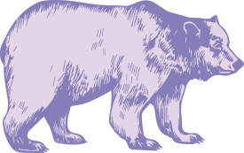

---
# Feel free to add content and custom Front Matter to this file.
# To modify the layout, see https://jekyllrb.com/docs/themes/#overriding-theme-defaults
layout: default
---
Cassandra Bayer
Data Scientist

{% for project in site.data.projects %}
{% endfor %}